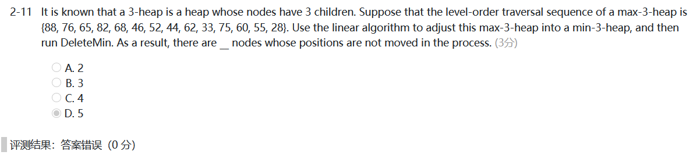

Foundation of Data Structure
by OE.Heart
1 Algorithm Analysis
[Definition] An algorithm is a finite set of instructions that, if followed, accomplishes a particular task. In addition, all algorithms must satisfy the following criteria.
-
Input : There are zero or more quantities that are externally supplied.
-
Output : At least one quantity is produced.
-
Definiteness : Each instruction is clear and unambiguous.
-
Finiteness : the algorithm terminates after finite number of steps
-
Effectiveness : basic enough to be carried out ; feasible
-
A program does not have to be finite. (eg. an operation system)
-
An algorithm can be described by human languages, flow charts, some programming languages, or pseudocode.
[Example] Selection Sort : Sort a set of \(n\geq1\) integers in increasing order
| Text Only | |
|---|---|
1.1 What to Analyze
-
Machine and compiler-dependent run times.
-
Time and space complexities : machine and compiler independent.
-
Assumptions:
instructions are executed sequentially 顺序执行
each instruction is simple, and takes exactly one time unit
- integer size is fixed and we have infinite memory
- \(T_{avg}(N)\, and\, T_{worst}(N)\) : the average and worst case time complexities as functions of input size \(N\)
[Example] Matrix addition
| C | |
|---|---|
- 非对称
[Example] Iterative function for summing a list of numbers
| C | |
|---|---|
[Example] Recursive function for summing a list of numbers
| C | |
|---|---|
But it takes more time to compute each step.
1.2 Asymptotic Notation(\(O,\Omega,\Theta,o\))
- predict the growth ; compare the time complexities of two programs ; asymptotic(渐进的) behavior
[Definition] \(T(N)=O(f(N))\) if there are positive constants \(c\) and \(n_0\) such that \(T(N)\leq c\cdot f(N)\) for all \(N\geq n_0\).(upper bound)
[Definition] \(T(N)=\Omega(g(N))\) if there are positive constants \(c\) and \(n_0\) such that \(T(N)\geq c\cdot f(N)\) for all \(N\geq n_0\).(lower bound)
[Definition] \(T(N)=\Theta(h(N))\) if and only if \(T(N)=O(h(N))\) and \(T(N)=\Omega(h(N))\).
[Definition] \(T(N)=o(p(N))\) if \(T(n)=O(p(N))\) and \(T(N)\neq\Theta(p(N))\).
-
\(2N+3=O(N)=O(N^{k\geq1})=O(2^N)=\ldots\) take the smallest \(f(N)\)
-
\(2^N+N^2=\Omega(2^N)=\Omega(N^2)=\Omega(N)=\Omega(1)=\ldots\) take the largest \(g(N)\)
-
Rules of Asymptotic Notation
- If \(T_1(N)=O(f(N))\) and \(T_2=O(g(N))\), then
(1) \(T_1(N)+T_2(N)=max(O(f(N)),O(g(N)))\)
(2) \(T_1(N)*T_2(N)=O(f(N)*g(N))\)
若\(T(N)\)是一个\(k\)次多项式，则\(T(N)=\Theta(N^k)\)
\(log_kN=O(N)\) for any constant \(k\) (logarithms grow very slowly)


[Example] Matrix addition
| C | |
|---|---|
General Rules
For loops : The running time of a for loop is at most the running time of the statements inside the for loop (including tests) times the number of iterations.
Nested for loops : The total running time of a statement inside a group of nested loops is the running time of the statements multiplied by the product of the sizes of all the for loops.
Consecutive statements : These just add (which means that the maximum is the one that counts).
If/else : For the fragment if ( Condition ) S1; else S2;
The running time is never more than the running time of the test plus the larger of the running time of S1 and S2.
- Recursions :
[Example] Fibonacci number $$ Fib(0)=Fib(1)=1, Fib(n)=Fib(n-1)+Fib(n-2) $$
C $$ T(N)=T(N-1)+T(N-2)+2\geq Fib(N)\ \left(\frac{3}{2} \right)^n\leq Fib(N)\leq\left(\frac{5}{3}\right)^n $$
时间复杂度：\(O(2^N)\) \(T(N)\) grows exponentially
空间复杂度：\(O(N)\)

1.3 Compare the Algorithms
[Example] 最大子序列和
Algorithm 1
Algotithm 2
Algorithm 3 Divide and Conquer 分治法
Algorithm 4 On-line Algorithm 在线算法
| C | |
|---|---|
- A[ ] is scanned once only. 扫描一次，无需存储（处理streaming data）
- 在任意时刻，算法都能对它已经读入的数据给出子序列问题的正确答案(其他算法不具有这个特性)
1.4 Logrithms in the Running Time
- 如果一个算法用常数时间将问题的大小削减为其一部分(通常是1/2)，那么该算法就是\(O(logN)\)的
[Example] Binary Search
[Example] Euclid’s Algorithm
| C | |
|---|---|
[Example] Efficient exponentiation
| C | |
|---|---|
1.5 Checking Your Analysis
Method 1
When \(T(N)=O(N)\), check if \(T(2N)/T(N)\approx2\)
When \(T(N)=O(N^2)\), check if \(T(2N)/T(N)\approx4\)
When \(T(N)=O(N^3)\), check if \(T(2N)/T(N)\approx8\)
Method 2
When \(T(N)=O(f(N))\), check if $\lim\limits_{N\rightarrow\infty}\frac{T(N)}{f(N)}\approx C $
2 LIst, Stacks and Queues
2.1 Abstract Data Type(ADT) 抽象数据类型
[Definition] Data Type = {Objects} and {Operations}
[Definition] An Abstract Data Type(ADT) is a data type that is organized in such a way that the specification on the objects and specification of the operations on the objects are separated from the representation of the objects and the implementation on the operations.
2.2 The List ADT
- Objects : N items
- Operations
- Finding the length
- Printing
- Making an empty
- Finding
- Inserting
- Deleting
- Finding next
- Finding previous
Simple Array implementation of Lists
-
Sequential mapping 连续存储，访问快
-
Find_Kth take \(O(1)\) time.
-
MaxSize has to be estimated.
-
Insertion and Deletion not only take \(O(N)\) times, but also involve a lot of data movements which takes time.

Query 查询
Linked Lists
-
Location of nodes may change on differrent runs.
-
Insertion 先连后断
-
Deletion 先连后释放
-
频繁malloc和free系统开销较大
-
Finding take \(O(N)\) times.
| C | |
|---|---|
| C | |
|---|---|
| C | |
|---|---|
| C | |
|---|---|
| C | |
|---|---|
Doubly Linked Circular Lists
- Finding take \(O(\frac N 2)\) times.

The correct answer is D.
Two Applications
-
The Polynomial ADT
-
Objects :
-
Operations :
-
Finding degree
- Addition
- Subtraction
-
Multiplication
-
Differentiation
-
[Representation 1]
| C | |
|---|---|
- [Representation 2]
| C | |
|---|---|
-
只存储非零项
-
Multilists
Cursor Implementation of Linked Lists(no pointer)

2.3 The Stack ADT
- Last-In-First-Out (LIFO)
- Objects : A finite ordered list with zero or more elements.
- Operations :
- IsEmpty
- CreatStack
- DisposeStack
- MakeEmpty
- Push
- Top
- Pop
- A Pop(or Top) on an empty stack in an error in the stack ADT.
- Push on a full stack is an implementation error but not an ADT error.
Linked List Implementation (with a header node)
- The calls to malloc and free are expensive. Simply keep another stack as a recycle bin.
| C | |
|---|---|
| C | |
|---|---|
| C | |
|---|---|
| C | |
|---|---|
Array Implementation of Stacks
| C | |
|---|---|
-
The stack model must be well encapsulated(封装). That is, no part of your code, except for the stack routines, can attempt to access the Array or TopOfStack variable.
-
Error check must be done before Push or Pop (Top).
| C | |
|---|---|
| C | |
|---|---|
| C | |
|---|---|
Application
- Balancing Symbols
检查括号是否平衡
-
Postfix Evaluation 后缀表达式
-
Infix to Postfix Conversion
-
读到一个操作数时立即把它放到输出中
- 读到一个操作符时从栈中弹出栈元素直到发现优先级更低的元素为止，再将操作符压入栈中
- The order of operands is the same in infix and postfix.
- Operators with higher precedence appear before those with lower precedence.
- Never pop a ’(‘ from the stack except when processing a ‘)’.
- When ‘(’ is not in the stack, its precedence is the highest; but when it is in the stack, its precedence is the lowest.
-
Exponentiation associates right to left.
-
Function Calls (System Stack)

Note : Recursion can always be completely removed. Non recursive programs are generally faster than equivalent recursive programs. However, recursive programs are in general much simpler and easier to understand.
2.4 The Queue ADT
- First-In-First-Out (FIFO)
- Objects : A finite ordered list with zero or more elements.
- Operations :
- IsEmpty
- CreatQueue
- DisposeQueue
- MakeEmpty
- Enqueue
- Front
- Dequeue
Array Implementation of Queues
| C | |
|---|---|
Circular Queue :


- The maximum capacity of this queue is 5.
Note : Adding a Size field can avoid wasting one empty space to distinguish “full” from “empty”.
3 Trees
3.1 Preliminaries
[Definition] A tree is a collection of nodes. The collection can be empty; otherwise, a tree consists of (1) a distinguished node r, called the root; (2) and zero or more nonempty (sub)trees, each of whose roots are connected by a directed edge from r.
-
Subtrees must not connect together. Therefore every node in the tree is the root of some subtree.
-
There are N-1 edges in a tree with N nodes
Terminologies
- degree of a node : 结点的子树个数
- degree of a tree : 结点的度的最大值
- parent : 有子树的结点
- children : the roots of the subtrees of a parent
- siblings : children of the same parent
- leaf(terminal node) : a node with degree 0(no children)
- path from \(n_1\) to \(n_k\) : a unique sequence of nodes \(n_1,n_2,\cdots,n_k\) such that \(n_i\) is the parent of \(n_{i+1}\) for \(1\leq i<k\)
- length of path : 路径上边的条数
- depth of \(n_i\) : 从根结点到\(n_i\)结点的路径的长度(\(Depth(root)=0\))
- height of \(n_i\) : 从\(n_i\)结点到叶结点的最长路径的长度(\(Height(leaf)=0\))
- height/depth of a tree : 根结点的高度/最深的叶结点的深度
- ancestors of a node : 从此结点到根结点的路径上的所有结点
- descendants of a node : 此结点的子树中的所有结点
List Representation
- The size of each node depends on the number of branches.

The correct answer is T.
FirstChild-NextSibling Representation

- The representation is not unique since the children in a tree can be of any order.
3.2 Binary Trees
[Definition] A binary tree is a tree in which no node can have more than two children.
Tree Traversals (visit each node exactly once)
- Preorder Traversal
| Text Only | |
|---|---|
- Postorder Traversal
| Text Only | |
|---|---|
- Levelorder Traversal
| Text Only | |
|---|---|
- Inorder Traversal
| Text Only | |
|---|---|
Iterative Program :
| Text Only | |
|---|---|

Threaded Binary Trees
-
A full binary tree with \(n\) nodes has \(2n\) links, and \(n+1\) of them are NULL.
-
Replace the NULL links by “threads” which will make traversals easier.
Rules :
- If Tree->Left is null, replace it with a pointer to the inorder predecessor(中序前驱) of Tree.
- If Tree->Right is null, replace it with a pointer to the inorder successor(中序后继) of Tree.
- There must not be any loose threads. Therefore a threaded binary tree must have a head node of which the left child points to the first node.
- 线索化的实质就是将二叉链表中的空指针改为指向前驱或后继的线索。由于前驱和后继信息只有在遍历该二叉树时才能得到，所以，线索化的过程就是在遍历的过程中修改空指针的过程。

- In a tree, the order of children does not matter. But in a binary tree, left child and right child are different.
Properties of Binary Trees
- The maximum number of nodes on level \(i\) is \(2^{i-1},i\geq1\).
- The maximum number of nodes in a binary tree of depth \(k\) is \(2^k-1,k\geq1\).
- For any nonempty binary tree, \(n_0 = n_2 + 1\) where \(n_0\) is the number of leaf nodes and \(n_2\) is the number of nodes of degree 2.
3.3 Binary Search Trees
[Definition] A binary search tree is a binary tree. It may be empty. If it is not empty, it satisfies the following properties:
- 每个结点有一个互不不同的值
- 若左子树非空，则左子树上所有结点的值均小于根结点的值
- 若右子树非空，则右子树上所有结点的值均大于根结点的值
- 左、右子树也是是一棵二叉查找树
ADT
- Objects : A finite ordered list with zero or more elements.
- Operations :
- SearchTree MakeEmpty( SearchTree T )
- Position Find( ElementType X, SearchTree T )
- Position FindMin( SearchTree T )
- Position FindMax( SearchTree T )
- SearchTree Insert( ElementType X, SearchTree T )
- SearchTree Delete( ElementType X, SearchTree T )
- ElementType Retrieve( Position P )
Implementations
- Find
- \(T(N)=S(N)=O(d)\) where \(d\) is the depth of X
Iterative program :
| Text Only | |
|---|---|
- FindMin
| Text Only | |
|---|---|
- FindMax
| Text Only | |
|---|---|
- Insert
- 内存越界后不会马上报错，在下一次free或malloc时会失败
- Handle duplicated keys
-
\(T(N)=O(d)\)
-
Delete
-
Delete a leaf node : Reset its parent link to NULL
- Delete a degree 1 node : Replace the node by its single child
- Delete a degree 2 node : 用左子树最大值结点或右子树最小值结点替换
- \(T(N)=O(d)\)
Note : If there are not many deletions, then lazy deletion may be employed: add a flag field to each node, to mark if a node is active or is deleted. Therefore we can delete a node without actually freeing the space of that node. If a deleted key is reinserted, we won’t have to call malloc again.
-
Average-Case Analysis
-
The average depth over all nodes in a tree is \(O(logN)\) on the assumption that all trees are equally likely.
- 将\(n\)个元素存入二叉搜索树，树的高度将由插入序列决定

The correct answer is A.
4 Priority Queues (Heaps)
4.1 ADT Model
- Objects :A finite ordered list with zero or more elements.
- Operations :
- PriorityQueue Initialize( int MaxElements );
- void Insert( ElementType X, PriorityQueue H );
- ElementType DeleteMin( PriorityQueue H );
- ElementType FindMin( PriorityQueue H );
4.2 Implementations
Array
-
Insertion — add one item at the end ~\(\Theta(1)\)
-
Deletion — find the largest / smallest key ~\(\Theta(n)\)
remove the item and shift array ~\(O(n)\)
Linked List
-
Insertion — add to the front of the chain ~\(\Theta(1)\)
-
Deletion — find the largest / smallest key ~\(\Theta(n)\)
remove the item ~\(\Theta(1)\)
- Never more deletions than insertions
Ordered Array
- Insertion — find the proper position ~\(O(\log n)\)
shift array and add the item ~\(O(n)\)
- Deletion — remove the first / last item ~\(\Theta(1)\)
Ordered Linked List
- Insertion — find the proper position ~\(O(n)\)
add the item ~\(\Theta(1)\)
- Deletion — remove the first / last item ~\(\Theta(1)\)
Binary Search Tree
- Both insertion and deletion will take \(O(\log N)\) only.
- Only delete the the minimum element, always delete from the left subtrees.
- Keep a balanced tree
- But there are many operations related to AVL tree that we don't really need for a priority queue.
4.3 Binary Heap
Structure Property
[Definition] A binary tree with \(n\) nodes and height \(h\) is complete if its nodes correspond to the nodes numbered from \(1\) to \(n\) in the perfect binary tree of height \(h\).
-
A complete binary tree of height \(h\) has between \(2^h\) and \(2^{h+1}-1\) nodes.
-
\(h=\lfloor\log N\rfloor\)
-
Array Representation : BT[n + 1] ( BT[0] is not used)

[Lemma]
- \(index\,of\,parent(i)=\left\{ \begin{array}{rcl} \lfloor i/2\rfloor && {i\neq1}\\ None && {i=1}\\ \end{array} \right.\)
- \(index\,of\,left\_child(i)=\left\{ \begin{array}{rcl} 2i && {2i\leq n}\\ None && {2i>n}\\ \end{array} \right.\)
- \(index\,of\,right\_child(i)=\left\{ \begin{array}{rcl} 2i+1 && {2i+1\leq n}\\ None && {2i+1>n}\\ \end{array} \right.\)
Heap Order Property
[Definition] A min tree is a tree in which the key value in each node is no larger than the key values in its children (if any). A min heap is a complete binary tree that is also a min tree.
- We can declare a max heap by changing the heap order property.
Basic Heap Operations
- Insertion
$$ T(N)=O(\log N) $$
- DeleteMin
Other Heap Operations
-
查找除最小值之外的值需要对整个堆进行线性扫描
-
DecreaseKey — Percolate up
-
IncreaseKey — Percolate down
-
Delete
-
BuildHeap
将N 个关键字以任意顺序放入树中，保持结构特性，再执行下滤
$$ T(N)=O(N) $$
[Theorem] For the perfect binary tree of height \(h\) containing \(2^{h+1}-1\) nodes, the sum of the heights of the nodes is \(2^{h+1}-1-(h+1)\).
4.4 Applications of Priority Queues
Heap Sort
查找一个序列中第k小的元素
The function is to find the K-th smallest element in a list A of N elements. The function BuildMaxHeap(H, K) is to arrange elements H[1] ... H[K] into a max-heap.
4.5 \(d\)-Heaps — All nodes have \(d\) children
Note :
- DeleteMin will take \(d-1\) comparisons to find the smallest child. Hence the total time complexity would be \(O(d \log_d N)\).
- 2 or /2 is merely *a bit shift**, but *d or /d is not.
- When the priority queue is too large to fit entirely in main memory, a d-heap will become interesting.


正确答案是4，注意“in the process”
5 The Disjoint Set
5.1 Equivalence Relations
[Definition] A relation R is defined on a set S if for every pair of elements (a, b), a, b \(\in\) S, a R b is either true or false. If a R b is true, then we say that a is related to b.
[Definition] A relation, ~, over a set, S, is said to be an equivalence relation over S if it is symmetric, reflexive, and transitive over S.
[Definition] Two members x and y of a set S are said to be in the same equivalence class if x ~ y.
5.2 The Dynamic Equivalence Problem
- Given an equivalence relation ~, decide for any a and b if a ~ b
-
Elements of the sets : \(1,2,3,\cdots,N\)
-
Sets : \(S_1,S_2,\cdots\,and\,S_i\bigcap S_j=\emptyset\,(if\quad i\neq j)\)
-
Operations :
-
Union( \(i, j\) ) = Replace \(S_i\) and \(S_j\) by \(S=S_i\bigcup S_j\)
- Find( \(i\) ) = Find the set \(S_k\) which contains the element \(i\)
5.3 Basic Data Structure
Union( \(i, j\) )
-
Make \(S_i\) a subtree of \(S_j\), or vice versa, that is to set the parent pointer of one of the roots to the other root.
-
Implementation 1 :

-
Implementation 2 :
-
The elements are numbered from 1 to N, hence they can be used as indices of an array.
-
S[ element ] = the element’s parent
-
Note : S[ root ] = 0 and set name = root index
- 数组初始化全部为0
Find( \(i\) )
- Implementation 1 :
- Implementation 2 :
Analysis
- Union and find are always paired. Thus we consider the performance of a sequence of union-find operations.

| Text Only | |
|---|---|
- Worst case : \(T(N)=\Theta(N^2)\)
5.4 Smart Union Algorithms
Union-by-Size
-
Always change the smaller tree
-
S[Root] = -size, initialized to be -1
-
[Lemma] Let T be a tree created by union-by-size with N nodes, then \(height(T)\leq\lfloor\log_2N\rfloor+1\).
Proved by induction. Each element can have its set name changed at most \(\log_2N\) times.
- Time complexity of \(N\) Union and \(M\) Find operations is now \(O(N+M\log_2N)\).
| C | |
|---|---|
Union-by-Height
- Always change the shallow tree
- 保证所有的树的深度最多是\(O(logN)\)
| C | |
|---|---|
5.5 Path Compression
- 从X到Root的路径上的每一个结点都使它的父结点变成Root
| C | |
|---|---|
| C | |
|---|---|
- Note : Not compatible with union-by-height since it changes the heights. Just take “height” as an estimated rank.
5.6 Worst Case for Union-by-Rank and Path Compression
[Lemma] Let \(T(M,N)\) be the maximum time required to process an intermixed sequence of \(M\geq N\) finds and \(N-1\) unions, then \(k_1M\alpha(M,N)\leq T(M,N)\leq k_2M\alpha(M,N)\) for some positive constants \(k_1\) and \(k_2\).
- Ackermann’s Function $$ A(i,j)=\left{ \begin{array}{rcl} 2^j && {i=1,j\geq1}\ A(i-1,2) && {i\geq2,j=1}\ A(i-1,A(i,j-1)) && {i\geq2,j\geq2}\ \end{array} \right. $$
$$ A(2,4)=2^{2^{2^{2^2}}}=2^{65536} $$
- \(\alpha(M,N)=min\{i\geq1|A(i,\lfloor M/N\rfloor)>\log N\}\leq O(\log^*N)\leq4\)
\(\log^*N\) (inverse Ackermann function) = number of times the logarithm is applied to \(N\) until the result \(\leq1\).
5.7 Conclusion
一共有五种算法，注意看清题设
-
No smart union
-
Union-by-size
-
Union-by-height
-
Union-by-size + Path Compression
-
Union-by-height + Path Compression
6 Graph Algorithms
6.1 Definitions
- \(G( V, E )\) where \(G\) = graph, \(V = V( G )\) = finite nonempty set of vertices, and \(E = E( G )\) = finite set of edges.
Undirected graph
- \(( v_i , v_j ) = ( v_j , v_i )\) = the same edge.
Directed graph(diagraph)

Restrictions
- Self loop is illegal.
- Multigraph is not considered.
Complete graph
- A graph that has the maximum number of edges.
Adjacent


Subgraph
Path
- Path(\(\subset G\)) from \(v_p\) to \(v_q\) = \(\{v_p,v_{i1},v_{i2},\cdots,v_{in},v_q\}\) such that \((v_p,v_{i1}),(v_{i1},v_{i2}),\cdots,(v_{in},v_q)\) belong to \(E(G)\)
Length of a path
- number of edges on the path
Simple path
- \(v_{i1},v_{i2},\cdots,v_{in}\) are distinct.
Cycle
- simple path with \(v_p=v_q\)
Connected
- \(v_i\) and \(v_j\) in an undirected \(G\) are connected if there is a path from \(v_i\) to \(v_j\) (and hence there is also a path from \(v_j\) to \(v_i\))
- An undirected graph \(G\) is connected if every pair of distinct \(v_i\) and \(v_j\) are connected
(Connected) Component of an undirected G
- the maximal connected subgraph
Tree
- a graph that is connected and acyclic(非循环的)
DAG
- a directed acyclic graph
Strongly connected directed graph G
- For every pair of \(v_i\) and \(v_j\) in \(V( G )\), there exist directed paths from \(v_i\) to \(v_j\) and from \(v_j\) to \(v_i\).
- If the graph is connected without direction to the edges, then it is said to be weakly connected
Strongly connected component
- the maximal subgraph that is strongly connected
Degree
-
number of edges incident to v
-
For a directed G, we have in-degree and out-degree.
-
Given G with \(n\) vertices and \(e\) edges, then $$ e=(\sum_{i=0}^{n-1}d_i)/2\quad where\quad d_i=degree(v_i) $$
6.2 Representation of Graphs
Adjacency Matrix

Note : If G is undirected, then adj_mat[][] is symmetric. Thus we can save space by storing only half of the matrix.

-
This representation wastes space if the graph has a lot of vertices but very few edges.
-
To find out whether or not \(G\) is connected, we’ll have to examine all edges. In this case \(T\) and \(S\) are both \(O( n^2 )\).
Adjacency Lists
- Replace each row by a linked list

Note : The order of nodes in each list does not matter.
- For undirected \(G\), \(S\) = \(n\) heads + \(2e\) nodes = \((n+2e)\) ptrs + \(2e\) ints
- Degree(i) = number of nodes in graph[i](if \(G\) is undirected)
- \(T\) of examine \(E(G)\) = \(O(n+e)\)

Adjacency Multilists
- Sometimes we need to mark the edge after examine it, and then find the next edge.
Weighted Edges
- adj_mat [ i ] [ j ] = weight
- adjacency lists / multilists : add a weight field to the node
6.3 Topological Sort
AOV Network
- digraph \(G\) in which \(V( G )\) represents activities and \(E( G )\) represents precedence relations
- Feasible AOV network must be a directed acyclic graph.
- \(i\) is a predecessor of \(j\) = there is a path from \(i\) to \(j\)
- \(i\) is an immediate predecessor of \(j\) = \(< i, j > \in E( G )\). Then \(j\) is called a successor(immediate successor) of \(i\)
Partial order
- a precedence relation which is both transitive and irreflexive
Note : If the precedence relation is reflexive, then there must be an \(i\) such that \(i\) is a predecessor of \(i\). That is, \(i\) must be done before \(i\) is started. Therefore if a project is feasible, it must be irreflexive.
[Definition] A topological order is a linear ordering of the vertices of a graph such that, for any two vertices, \(i\), \(j\), if \(i\) is a predecessor of \(j\) in the network then \(i\) precedes \(j\) in the linear ordering.
Note : The topological orders may not be unique for a network.
6.4 Shortest Path Algorithms
Given a digraph \(G = ( V, E )\), and a cost function \(c( e )\) for \(e \in E( G )\).
The length of a path \(P\) from source to destination is \(\sum_{e_i\subset P} c(e_i)\)(also called weighted path length).
Single-Source Shortest-Path Problem
Given as input a weighted graph, \(G = ( V, E )\), and a distinguished vertex \(s\), find the shortest weighted path from \(s\) to every other vertex in \(G\).
Note: If there is no negative-cost cycle, the shortest path from \(s\) to \(s\) is defined to be zero.
Unweighted Shortest Path
- Breadth-first search 广度优先遍历
Implementation :
- Table[ i ].Dist ::= distance from \(s\) to \(v_i\) /* initialized to be \(\infin\) except for \(s\) */
- Table[ i ].Known ::= 1 if \(v_i\) is checked; or 0 if not
- Table[ i ].Path ::= for tracking the path /* initialized to be 0 */
The worst case :
 $$
T(N)=O(|V|^2)
$$
Improvement :
$$
T(N)=O(|V|^2)
$$
Improvement :
Weighted Shorted Path
Dijkstra’s Algorithm
- Let S = { \(s\) and \(v_i\)’s whose shortest paths have been found }
- For any \(u\notin S\), define distance [ u ] = minimal length of path { \(s\rightarrow(v_i\in S)\rightarrow u\) }. If the paths are generated in non-decreasing order, then :
- the shortest path must go through only \(v_i\in S\)
- Greedy Method : \(u\) is chosen so that distance[ u ] = min{ \(w \notin S\) | distance[ w ] } (If \(u\) is not unique, then we may select any of them)
- if distance[\(u_1\)] < distance[\(u_2\)] and add \(u_1\) into \(S\), then distance [ \(u_2\) ] may change. If so, a shorter path from \(s\) to \(u_2\) must go through \(u_1\) and distance [ \(u_2\) ] = distance [ \(u_1\) ] + length(< \(u_1\), \(u_2\)>).
| C | |
|---|---|
| C | |
|---|---|
| C | |
|---|---|
Implementation 1
- Simply scan the table to find the smallest unknown distance vertex.——\(O(|V|)\)
- Good if the graph is dense
Implementation 2
-
堆优化
-
Keep distances in a priority queue and call
DeleteMinto find the smallest unknown distance vertex.——\(O(\log|V|)\) -
更新的处理方法
-
Method 1 :
DecreaseKey——\(O(\log|V|)\)\(T=O(|V|\log|V|+|E|\log|V|)=O(|E|\log|V|)\)
-
Method 2 : insert W with updated Dist into the priority queue
Must keep doing
DeleteMinuntil an unknown vertex emerges\(T=O(|E|\log|V|)\) but requires \(|E|\)
DeleteMinwith|E|space -
Good if the graph is sparse
Improvements
- Pairing heap
- Fibonacci heap
Graphs with Negative Edge Costs
Note : Negative-cost cycle will cause indefinite loop
Acyclic Graphs
- If the graph is acyclic, vertices may be selected in topological order since when a vertex is selected, its distance can no longer be lowered without any incoming edges from unknown nodes.
- \(T=O(|E|+|V|)\) and no priority queue is needed.
AOE(Activity on Edge) Networks

All-Pairs Shortest Path Problem
- For all pairs of \(v_i\) and \(v_j\) ( \(i\neq j\) ), find the shortest path between.
Method 1
- Use single-source algorithm for \(|V|\) times.
- \(T=O(|V|^3)\), works fast on sparse graph.
Method 2
- 动态规划
- \(O(|V|^3)\) algorithm given in Chapter 10, works faster on dense graphs.
6.5 Network Flow Problems

- Determine the maximum amount of flow that can pass from \(s\) to \(t\).
Note : Total coming in (\(v\)) = Total going out (\(v\)) where \(v \notin \{ s, t \}\)
A Simple Algorithm
- 流图\(G_f\)表示算法的任意阶段已经达到的流，开始时\(G_f\)的所有边都没有流，算法终止时\(G_f\)包含最大流
- 残余图(residual graph)\(G_r\)表示对于每条边还能添加上多少流，\(G_r\)的边叫做残余边(residual edge)
Step 1 : Find any path from \(s\) to \(t\) in \(G_r\) , which is called augmenting path(增长通路).
Step 2 : Take the minimum edge on this path as the amount of flow and add to \(G_f\).
Step 3 : Update \(G_r\) and remove the 0 flow edges.
Step 4 : If there is a path from \(s\) to \(t\) in \(G_r\) then go to Step 1, or end the algorithm.
- Step 1中初始选择的路径可能使算法不能找到最优解，贪心算法行不通
A solution
- allow the algorithm to undo its decisions
- For each edge \(( v, w )\) with flow \(f_{v, w}\) in \(G_f\), add an edge \(( w, v )\) with flow \(f_{v, w}\) in \(G_r\) .
Note : The algorithm works for \(G\) with cycles as well.
[Proposition] If the edge capabilities are rational numbers, this algorithm always terminate with a maximum flow.
Analysis
-
An augmenting path can be found by an unweighted shortest path algorithm.
-
\(T=O(f|E|)\) where \(f\) is the maximum flow.
-
Always choose the augmenting path that allows the largest increase in flow
-
对Dijkstra算法进行单线(single-line)修改来寻找增长通路
- \(cap_{max}\)为最大边容量
- \(O(|E|\log cap_{max})\)条增长通路将足以找到最大流，对于增长通路的每次计算需要\(O(|E|\log|V|)\)时间
$$ T=T_{augmentation}\times T_{find_a_path}\ =O(|E|\log cap_{max})\times O(|E|\log|V|)\ =O(|E|^2\log|V|\log cap_{max}) $$
-
Always choose the augmenting path that has the least number of edges
-
使用无权最短路算法来寻找增长路径
$$ T=T_{augmentation}\times T_{find_a_path}\ =O(|E||V|)\times O(|E|)\ =O(|E|^2|V|) $$
Note :
- If every \(v \notin \{ s, t \}\) has either a single incoming edge of capacity 1 or a single outgoing edge of capacity 1, then time bound is reduced to \(O( |E| |V|^{1/2} )\).
- The min-cost flow problem is to find, among all maximum flows, the one flow of minimum cost provided that each edge has a cost per unit of flow.
6.6 Minimum Spanning Tree
[Definition] A spanning tree of a graph \(G\) is a tree which consists of \(V(G)\) and a subset of \(E(G)\)
Note :
- The minimum spanning tree is a tree since it is acyclic, the number of edges is \(|V|-1\)
- It is minimum for the total cost of edges is minimized.
- It is spanning because it covers every vertex.
- A minimum spanning tree exists if \(G\) is connected.
- Adding a non-tree edge to a spanning tree, we obtain a cycle.
Greedy Method
Make the best decision for each stage, under the following constrains :
- we must use only edges within the graph
- we must use exactly \(|V|-1\) edges
- we may not use edges that would produce a cycle
-
Prim’s Algorithm
-
在算法的任一时刻，都可以看到一个已经添加到树上的顶点集，而其余顶点尚未加到这棵树中
-
算法在每一阶段都可以通过选择边\((u, v)\)，使得\((u,v)\)的值是所有\(u\) 在树上但\(v\)不在树上的边的值中的最小者，而找出一个新的顶点并把它添加到这棵树中
-
Kruskal’s Algorithm
-
连续地按照最小的权选择边,，并且当所选的边不产生环时就把它作为取定的边
$$ T=O(|E|\log|E|) $$

6.7 Applications of Depth-First Search
| C | |
|---|---|
Undirected Graphs
| C | |
|---|---|
Biconnectivity
- \(v\) is an articulation point if \(G'=DeleteVertex(G, v)\) has at least 2 connected components.
- \(G\) is a biconnected graph if \(G\) is connected and has no articulation points.
- A biconnected component is a maximal biconnected subgraph.

Note : No edges can be shared by two or more biconnected components. Hence \(E(G)\) is partitioned by the biconnected components of \(G\).
Finding the biconnected components of a connected undirected \(G\) :
- Use depth first search to obtain a spanning tree of \(G\)
- Depth first number(\(Num\)) 先序编号
- Back edges(背向边) = \((u,v)\notin\) tree and \(u\) is an ancestor of \(v\).
Note : If \(u\) is an ancestor of \(v\), then \(Num(u)<Num(v)\).
Find the articulation points in \(G\)
The root is an articulation point if it has at least 2 children.
- Any other vertex \(u\) is an articulation point if \(u\) has at least 1 child, and it is impossible to move down at least 1 step and then jump up to \(u\)‘s ancestor


- 对于深度优先搜索生成树上的每一个顶点\(u\)，计算编号最低的顶点，称之为\(Low(u)\) $$ Low(u)=\min{Num(u),\min{Low(w)|w\,is\,a\,child\,of\,u},\min{Num(w)|(u,w)\,is\,a\,back\,edge}} $$
| Text Only | |
|---|---|
Euler Circuits
[Proposition] An Euler circuit is possible only if the graph is connected and each vertex has an even degree.
[Proposition] An Euler tour is possible if there are exactly two vertices having odd degree. One must start at one of the odd-degree vertices.
Note:
- The path should be maintained as a linked list.
- For each adjacency list, maintain a pointer to the last edge scanned.
- \(T=O(|E|+|V|)\)
7 Sorting
7.1 Preliminaries
| C | |
|---|---|
- N must be a legal integer.
- Assume integer array for the sake of simplicity.
- ‘>’ and ‘<’ operators exist and are the only operations allowed on the input data.
- Consider internal sorting only. The entire sort can be done in main memory.
7.2 Insertion Sort
-
The worst case : Input A[ ] is in reverse order $$ T(N)=O(N^2) $$
-
The best case : Input A[ ] is in sorted order $$ T(N)=O(N) $$
7.3 A Lower Bound for Simple Sorting Algorithms
[Definition] An inversion in an array of numbers is any ordered pair\((i,j)\) having the property that \(i<j\) but \(A[i]>A[j]\)
-
Swapping two adjacent elements that are out of place removes exactly one inversion.
-
\(T(N,I)=O(I+N)\) where \(I\) is the number of inversions in the original array.
[Theorem] The average number of inversions in an array of \(N\) distinct numbers is \(N(N-1)/4\)
[Theorem] Any algorithm that sorts by exchanging adjacent elements requires \(\Omega(N^2)\) time on average
7.4 Shellsort
- Define an increment sequence \(h_1 < h_2 < \cdots < h_t ( h_1 = 1 )\)
-
Define an \(h_k\)-sort at each phase for \(k = t, t - 1,\cdots, 1\)
-
最后一轮就是Insertion Sort
Note : An \(h_k\)-sorted file that is then \(h_{k-1}\)-sorted remains \(h_k\)-sorted.
Shell’s Increment Sequence
- [Theorem] The worst-case running time of Shellsort, using Shell’s increments, is \(\Theta( N^2 )\).
Hibbard's Increment Sequence
- [Theorem] The worst-case running time of Shellsort, using Hibbard's increments, is \(\Theta( N^{3/2} )\).
Conjecture
- \(T_{avg – Hibbard} ( N ) = O ( N^{5/4} )\)
- Sedgewick’s best sequence is \(\{1, 5, 19, 41, 109, \cdots \}\) in which the terms are either of the form \(9\times4^i – 9\times2^i + 1\) or \(4^i – 3\times2^i + 1\). \(T_{avg} ( N ) = O ( N^{7/6} )\) and \(T_{worst}( N ) = O( N^{4/3} )\).
Conclusion
- Shellsort is a very simple algorithm, yet with an extremely complex analysis.
- It is good for sorting up to moderately large input (tens of thousands).
7.5 Heapsort
Algorithm1
| C | |
|---|---|
- The space requirement is doubled.
Algorithm2
| C | |
|---|---|
- [Theorem] The average number of comparisons used to heapsort a random permutation of N distinct items is \(2N\log N-O(N\log\log N)\).
Note : Although Heapsort gives the best average time, in practice it is slower than a version of Shellsort that uses Sedgewick’s increment sequence.
7.6 Mergesort
- If a TmpArray is declared locally for each call of Merge, then \(S(N) = O(N\log N)\).
Analysis
Note : Mergesort requires linear extra memory, and copying an array is slow. It is hardly ever used for internal sorting, but is quite useful for external sorting.
7.7 Quicksort
- the fastest known sorting algorithm in practice
Algorithm
| Text Only | |
|---|---|
- The pivot is placed at the right place once and for all.
- 要研究的问题是如何选取枢纽元和如何划分
Picking the Pivot
A Wrong Way
- Pivot = A[ 0 ]
- The worst case : A[ ] is presorted, quicksort will take \(O(N^2)\) time to do nothing
A Safe Maneuver
- Pivot = random select from A[ ]
- random number generation is expensive
Median-of-Three Partitioning
- Pivot = median(left, center, right)
- Eliminates the bad case for sorted input and actually reduces the running time by about 5%.
Partitioning Strategy
- 当\(i\)在\(j\)的左边时，我们将\(i\)右移，移过那些小于枢纽元的元素，并将\(j\)左移，移过那些大于枢纽元的元素
- 当\(i\)和\(j\)停止时，\(i\)指向一个大元素而\(j\)指向一个小元素，如果\(i\)在\(j\)的左边，那么将这两个元素互换
- 重复该过程直到\(i\)和\(j\)彼此交错为止
- 划分的最后一步是将枢纽元与\(i\)所指向的元素交换
- 如果\(i\)和\(j\)遇到等于枢纽元的键值，就让\(i\)和\(j\)都停止，因为若都不停止\(T(N)=O(N^2)\)
- There will be many dummy swaps, but at least the sequence will be partitioned into two equal-sized subsequences.
Small Arrays
- Quicksort is slower than insertion sort for small \(N(\leq 20)\).
- Cutoff when \(N\) gets small and use other efficient algorithms (such as insertion sort).
Implementation
| C | |
|---|---|
Note : If set i = Left+1 and j = Right-2, there will be an infinite loop if A[i] = A[j] = pivot.
Analysis
-
\(i\) is the number of the elements in \(S_1\).
-
The Worst Case $$ T(N)=T(N-1)+cN $$
$$ T(N-1)=T(N-2)+c(N-1) $$
$$ \cdots $$
$$ T(2)=T(1)+2c $$
$$ T(N)=T(1)+c\sum^N_{i=2}i=O(N^2) $$
- The Best Case $$ T(N)=2T(N/2)+cN $$
$$ \frac{T(N)}{N}=\frac{T(N/2)}{N/2}+c $$
$$ \frac{T(N/2)}{N/2}=\frac{T(N/4)}{N/4}+c $$
$$ \cdots $$
$$ \frac{T(2)}{2}=\frac{T(1)}{1}+c $$
$$ \frac{T(N)}{N}=\frac{T(1)}{1}+c\log N\frac{T(N)}{N}=\frac{T(1)}{1}+c\log N $$
$$ T(N)=cN\log N+N=O(N\log N) $$
-
The Average Case
-
Assume the average value of \(T( i )\) for any \(i\) is \(\frac{1}{N}\left[\sum^{N-1}_{j=0}T(j)\right]\) $$ T(N)=\frac{2}{N}\left[\sum^{N-1}_{j=0}T(j)\right]+cN $$
$$ NT(N)=2\left[\sum^{N-1}_{j=0}T(j)\right]+cN^2 $$
$$ (N-1)T(N-1)=2\left[\sum^{N-2}_{j=0}T(j)\right]+c(N-1)^2 $$
$$ NT(N)-(N-1)T(N-1)=2T(N-1)+2cN-c $$
$$ NT(N)=(N+1)T(N-1)+2cN $$
$$ \frac{T(N)}{N+1}=\frac{T(N-1)}{N}+\frac{2c}{N+1} $$
$$ \frac{T(N-1)}{N}=\frac{T(N-2)}{N-1}+\frac{2c}{N} $$
$$ \cdots $$
$$ \frac{T(2)}{3}=\frac{T(1)}{2}+\frac{2c}{3} $$
$$ \frac{T(N)}{N+1}=\frac{T(1)}{2}+2c\sum^{N+1}_{i=3}\frac{1}{i} $$
$$ T(N)=O(N\log N) $$
Quickselect
- 查找第\(K\)最大(最小)元

正确答案是D
7.8 Sorting Large Structures
- Swapping large structures can be very much expensive.
- Add a pointer field to the structure and swap pointers instead – indirect sorting. Physically rearrange the structures at last if it is really necessary.
- Table Sort
7.9 A General Lower Bound for Sorting
[Theorem] Any algorithm that sorts by comparisons only must have a worst case computing time of \(\Omega(N\log N)\).
- When sorting \(N\) distinct elements, there are \(N!\) different possible results.
- Thus any decision tree must have at least \(N!\) leaves.
- If the height of the tree is \(k\), then \(N! \leq 2^{k-1}\rarr k\geq\log(N!)+1\)
- Since \(N!\geq (N/2)^{N/2}\) and \(\log_2N!\geq(N/2)\log_2(N/2) = \Theta(N\log_2N )\)
- Therefore \(T(N)=k\geq c\cdot N\log_2 N\)
7.10 Bucket Sort

| Text Only | |
|---|---|
7.11 Radix Sort


- \(T=O(P(N+B))\) where \(P\) is the number of passes, \(N\) is the number of elements to sort, and \(B\) is the number of buckets.
MSD(Most Significant Digit) Sort and LSD(Least Significant Digit) Sort


- 稳定的排序算法：冒泡排序、插入排序、归并排序、基数排序
- 不稳定的排序算法：选择排序、快速排序、希尔排序、堆排序
8 Hashing
8.1 General Idea

Symbol Table ADT
- Objects : A set of name-attribute pairs, where the names are unique
- Operations :
- SymTab Create(TableSize)
- Boolean IsIn(symtab, name)
- Attribute Find(symtab, name)
- SymTab Insert(symtab, name, attr)
- SymTab Delete(symtab, name)
Hash Tables

- A collision occurs when we hash two nonidentical identifiers into the same bucket.
- An overflow occurs when we hash a new identifier into a full bucket.
8.2 Hash Function
- \(f(x)\) must be easy to compute and minimize the number of collisions.
- \(f(x)\) should be unbiased. For any \(x\) and any \(i\), we have that \(Probability(f(x)=i)=\frac{1}{b}\). Such kind of a hash function is called a uniform hash function.
8.3 Separate Chaining
- keep a list of all keys that hash to the same value
Create an empty table
Find a key from a hash table
| C | |
|---|---|
Insert a key into a hash table
Note : Make the TableSize about as large as the number of keys expected (i.e. to make the loading density factor \(\lambda\approx\)1).
8.4 Open Addressing
- find another empty cell to solve collision(avoiding pointers)
Note : Generally \(\lambda<0.5\).
Linear Probing
- \(F(i)\) is a linear function of \(i\), such as \(F(i)=i\).
- 逐个探测每个单元(必要时可以绕回)以查找出一个空单元
- 使用线性探测的预期探测次数对于插入和不成功的查找来说大约是\(\frac{1}{2}(1+\frac{1}{(1-\lambda)^2})\)，对于成功的查找来说是\(\frac{1}{2}(1+\frac{1}{1-\lambda})\)
- Cause primary clustering : any key that hashes into the cluster will add to the cluster after several attempts to resolve the collision.
Quadratic Probing
- \(F(i)\) is a quadratic function of \(i\), such as \(F(i)=i^2\).
[Theorem] If quadratic probing is used, and the table size is prime, then a new element can always be inserted if the table is at least half empty.

Note : If the table size is a prime of the form \(4k + 3\), then the quadratic probing \(f(i) = \pm i^2\) can probe the entire table.
| C | |
|---|---|
Note :
- Insertion will be seriously slowed down if there are too many deletions intermixed with insertions.
- Although primary clustering is solved, secondary clustering occurs, that is, keys that hash to the same position will probe the same alternative cells.
Double Hashing
- \(f(i)=i*hash_2(x)\)
- \(hash_2(x)\not\equiv 0\)
- make sure that all cells can be probed
- \(hash_2(x)=R-(x\%R)\) with \(R\) a prime smaller than TableSize, will work well.
Note :
- If double hashing is correctly implemented, simulations imply that the expected number of probes is almost the same as for a random collision resolution strategy.
- Quadratic probing does not require the use of a second hash function and is thus likely to be simpler and faster in practice.
8.5 Rehashing
- Build another table that is about twice as big.
- Scan down the entire original hash table for non-deleted elements.
- Use a new function to hash those elements into the new table.
- When to rehash
- As soon as the table is half full
- When an insertion fails
- When the table reaches a certain load factor
Note : Usually there should have been N/2 insertions before rehash, so O(N) rehash only adds a constant cost to each insertion. However, in an interactive system, the unfortunate user whose insertion caused a rehash could see a slowdown.